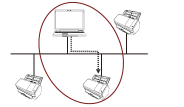
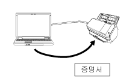

개요
Network Setup Tool for fi Series는 fi Series 이미지 스캐너를 사용할 수 있는 네트워크로 연결하는 데 사용되는 애플리케이션입니다.
Network Setup Tool for fi Series는 다음 도구와 함께 제공됩니다.
지원되는 스캐너 모델은 모델에 사용되는 공구에 따라 다릅니다. 사전에 사용하는 스캐너 모델의 이름이 각 도구에서 지원하는 스캐너 모델 이름 중 하나인지 확인합니다. 각 도구에서 지원하는 스캐너 모델에 대한 자세한 내용은 지원되는 스캐너 모델를 참조해 주십시오.
스캐너 선택 도구
이 도구는 컴퓨터에서 사용할 스캐너를 선택하는 데 사용됩니다.
네트워크에 연결된 스캐너 중에서 스캐너 하나를 선택할 수 있습니다.
fi-8950, fi-8930, fi-8820, fi-8040, fi-8190, fi-8290, fi-8170, fi-8270, fi-8150 또는 fi-8250을 선택한 경우 다음 조작을 실시할 수 있습니다.
[스캐너 선택 도구] 창에서 fi Series 네트워크 설정(웹 브라우저에서)을 시작하여 스캐너 설정을 구성합니다.
스캐너 설정을 구성하려면 컴퓨터에서 Software Operation Panel을 시작하십시오.
fi Series 네트워크 설정(웹 브라우저에서) 및 Software Operation Panel에 대한 자세한 내용은 스캐너의 사용 설명서를 참조해 주십시오.

IP 주소 설정 도구
이 도구는 IP 주소, 스캐너 이름, 보안 관련 정보 및 기타 네트워크 정보를 설정합니다.
증명서 등록 도구
증명서를 스캐너에 등록하여 스캐너를 Wi-Fi를 통해 증명서가 필요한 네트워크에 연결하는 도구입니다.
증명서를 스캐너에 등록한 후 스캐너 터치 스크린에서 Wi-Fi 설정을 구성합니다.
등록할 수 있는 증명서는 다음과 같습니다.
클라이언트 증명서: PKCS#12 형식 파일(*.p12, *.pfx)
CA 증명서: CA 증명서 파일(*.cer, *.crt, *.der, *.pem)

Button Event Manager
스캐너 버튼을 누를 때 시작할 이미지 스캔 애플리케이션을 지정하는 도구입니다.
컴퓨터에서 스캐너를 사용하려면 스캐너 선택 도구를 사용하여 네트워크에 연결된 스캐너를 설정해야 합니다.